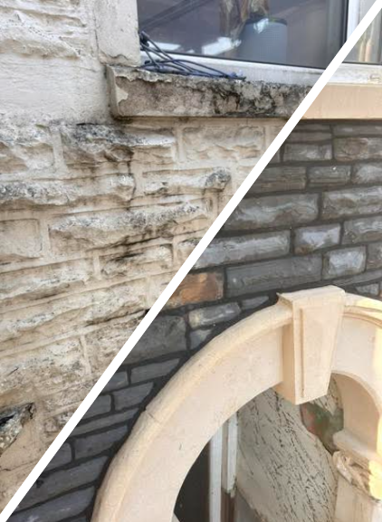
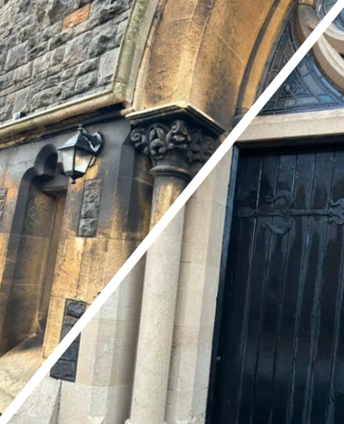
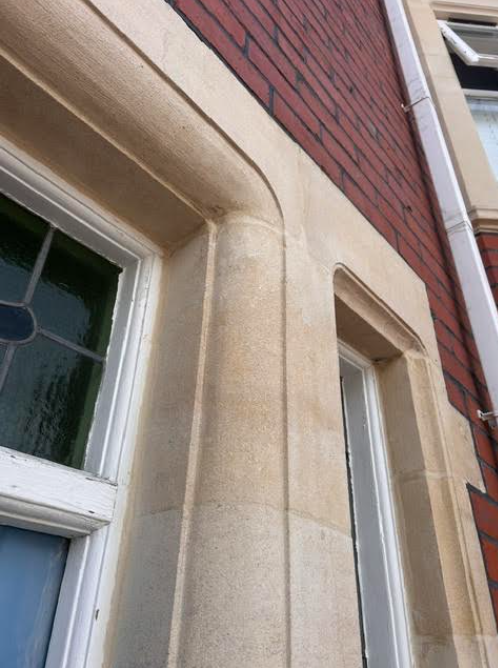
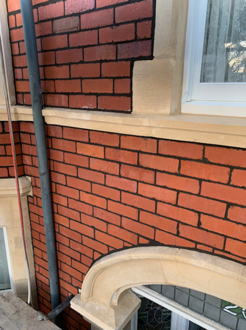
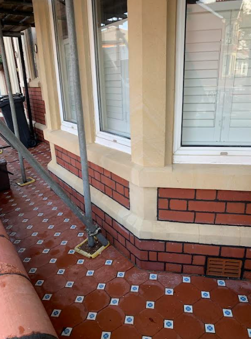

SERVICE 01 —
Paint Removal
Highly effective and delicate paint removal from brickwork, stonework, and soft bath stone. We restore the beautiful natural surface without damaging structural integrity.
Please see the list of services we offer. Every job is different so please get in touch if you have any questions about our services.

Highly effective and delicate paint removal from brickwork, stonework, and soft bath stone. We restore the beautiful natural surface without damaging structural integrity.

Professional structural cleaning designed to safely lift decades of atmospheric soot, carbon staining, and organic growth from weathered brickwork, bath stone, and heritage rubble walls.

Meticulous conservation and rebuilding of decorative bath stone structural columns, window bays, lintels, and architectural details to reinstate original heritage profiles.

Expert crafting and structural rebuilding of traditional dry stone and lime mortar rubble walls, seamlessly matching local geological formations and historical layouts.

Premium new brick construction and structural boundary wall building, using traditional bonds and meticulously selected matching materials to suit local South Wales heritage properties.

Removal of modern cement mortars and replacement with breathable lime pointing, utilizing traditional methods essential for damp prevention and structural breathing.

Sensitive but powerful pressure washing services for patios, driveways, garden walls, and stable structural foundations to instantly improve external presentation.